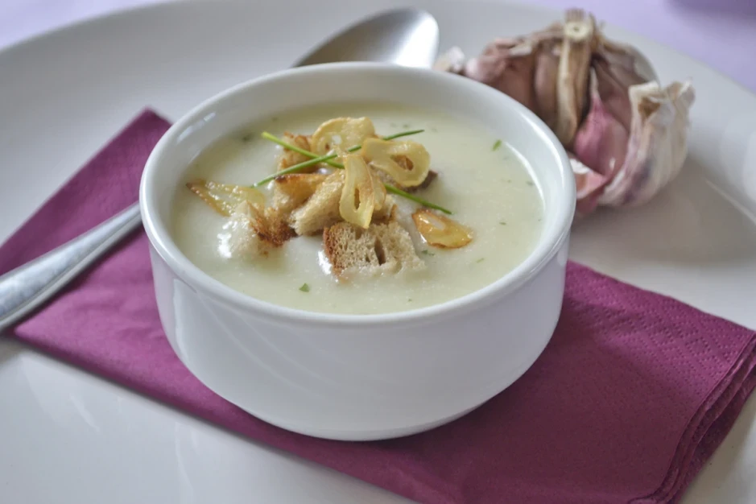

Knoblauchcremesuppe
30min
einfach
19.05.2025
| Stück (e) | Knoblauchzehen | |
| Knoblauchzehen | ||
| Esslöffel | Butter | |
| Butter | ||
| Esslöffel | Mehl | |
| Mehl | ||
| Milliliter | Rindsuppe (klar) | |
| Rindsuppe (klar) | ||
| Milliliter | Schlagobers | |
| Schlagobers | ||
| Prise (n) | Pfeffer | |
| Pfeffer | ||
| Prise (n) | Salz | |
| Salz | ||
| Esslöffel | Schnittlauch | |
| Schnittlauch | ||
Zubereitung
30min Gesamtzeit
10min Zubereitungszeit
20min Koch & Ruhezeit
Für die Knoblauchcremesuppe zuerst den Knoblauch schälen und ganz fein hacken.
Danach in einem Topf die Butter zerlassen, sobald die Butter heiß ist, das Mehl zufügen. Dabei ständig rühren.
Anschließend die Knoblauchzehen dazugeben, sofort mit der klaren Rindsuppe und dem Schlagobers aufgießen - alles schnell mit einem Schneebesen verrühren, damit sich keine Klumpen bilden.
Die Suppe aufkochen und anschließend rund 20 Minuten ziehen lassen. Zum Schluss mit Salz, Schnittlauch und Pfeffer würzen.
Tipps zum Rezept
Zur Suppe passen in Butter geröstete Schwarzbrotwürfel und fein gehackter Schnittlauch.
Wer keine feinen Knoblauchstücke in der Suppe mag, kann diese auch noch nach Belieben mit dem Stabmixer pürieren.
Diese köstliche Knoblauchcremesuppe kann man 1-2 Tage im Kühlschrank aufbewahren und kann, vor allem im Sommer, auch kalt serviert werden.
Rezept erstellt von

Dennis